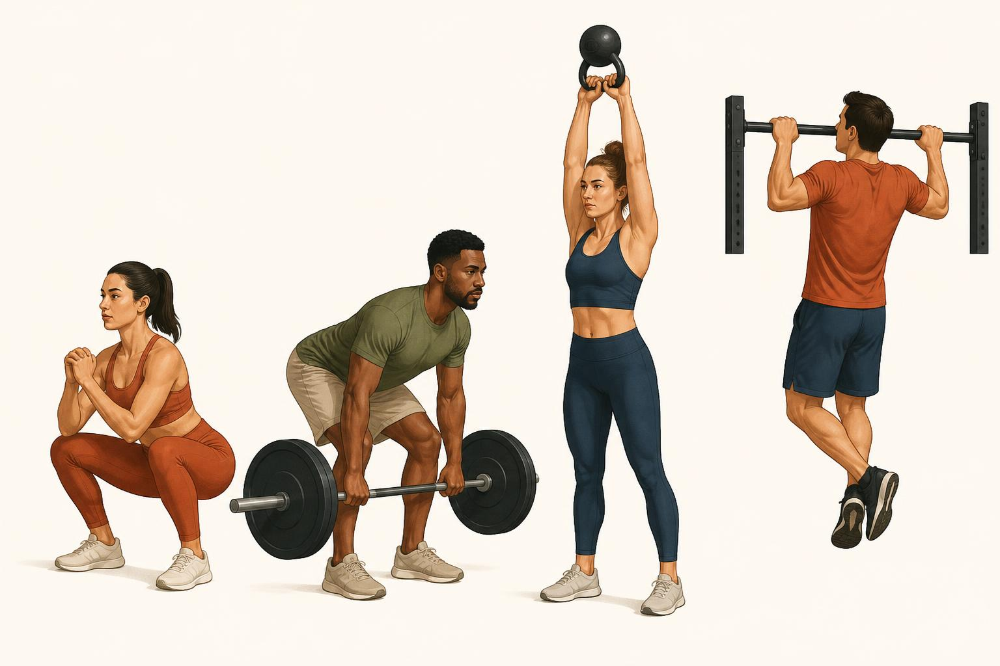

Foundational Movement Patterns
Stop organizing training around muscles or a random list of exercises. Organize it around what the body is actually being asked to do.
Everything in the first five chapters gave you a way to read a single muscle: origin, insertion, the logic of pull, and the deep muscles that quietly stabilize a joint. This chapter is where that anatomy becomes coaching. Instead of asking "what does this muscle do," you are going to start asking a bigger question: "what movement is this exercise, and does my client's program cover all of them." That is the movement-pattern way of seeing training, and once you can see it, you cannot unsee it.
This is education, not medical advice. Everything here is about organizing safe, effective training, not diagnosing pain or dysfunction. If a client cannot perform a pattern without pain, that is a referral conversation, covered later in this course.
Movements, not muscles
A muscle-by-muscle approach to programming asks "did I train the biceps today, did I train the hamstrings." A pattern approach asks a different question: "did I squat, hinge, push, pull, and carry this week." The shift matters because almost nothing you do in daily life, in sport, or in the gym involves one muscle working alone. A deadlift is not "a hamstring exercise," it is a hinge, a whole coordinated pattern where the hamstrings, glutes, and erector spinae all show up together to do one job. Thinking in patterns keeps you focused on the job, not just the workers.
There are nine patterns worth knowing cold: squat, hinge, horizontal push, vertical push, horizontal pull, vertical pull, lunge or split stance, carry or loaded locomotion, and rotation with its close partner, anti-rotation. Every exercise you will ever program is either one of these, a blend of two, or a small accessory move that supports one of them.
The nine patterns, one at a time
For each pattern below: what the movement actually is, the prime movers doing the work (tying back to the muscles from earlier chapters), one or two example exercises, and the fault you will see most often on the floor.
Squat
A squat is simultaneous hip and knee flexion followed by simultaneous hip and knee extension, with the torso staying relatively upright and the load traveling mostly straight up and down over the midfoot.
- Prime movers: quadriceps extending the knee, gluteus maximus and adductor magnus extending the hip, with the erector spinae and deep core bracing the spine so it does not round under load.
- Example exercises: goblet squat, back squat.
- Common fault to coach: the knees caving inward on the way up, usually a sign the hips are not doing their share of the work and the glutes need to be cued or strengthened.
Hinge
A hinge is hip flexion and extension with the knees staying relatively soft and still. The hips travel backward, the torso leans forward to counterbalance, and the load stays close to the shins the entire time.
- Prime movers: hamstrings and gluteus maximus extending the hip, erector spinae holding the spine in a neutral, unrounded position throughout.
- Example exercises: Romanian deadlift, kettlebell swing.
- Common fault to coach: rounding the lower back as the torso leans forward, or bending the knees so much that the hinge quietly turns into a squat.
Horizontal push
A horizontal push moves a load away from the torso in a plane roughly parallel to the floor, combining elbow extension with the shoulder moving across the front of the body.
- Prime movers: pectoralis major and anterior deltoid driving the arm forward, triceps brachii extending the elbow, with serratus anterior stabilizing the shoulder blade against the ribcage.
- Example exercises: flat bench press, push-up.
- Common fault to coach: elbows flaring out to nearly ninety degrees from the torso, which stresses the front of the shoulder, or a sagging hip during a push-up that breaks the plank line.
Vertical push
A vertical push presses a load overhead, combining shoulder flexion with elbow extension so the arm ends up in line with, or slightly behind, the ear.
- Prime movers: deltoid and triceps brachii doing the visible lifting, upper trapezius and serratus anterior rotating the shoulder blade upward to clear room for the arm, and the rotator cuff quietly centering the head of the humerus in the socket the entire rep, exactly the job you learned about in the deep-muscle chapter.
- Example exercises: standing overhead press, dumbbell shoulder press.
- Common fault to coach: arching the lower back and flaring the ribs to fake the last few degrees of overhead range instead of getting that range through the shoulder blade and thoracic spine.
Horizontal pull
A horizontal pull draws a load toward the torso in a plane roughly parallel to the floor, combining elbow flexion with the shoulder blade drawing back and down.
- Prime movers: latissimus dorsi, rhomboids, and middle trapezius pulling the shoulder blade back, biceps brachii assisting at the elbow.
- Example exercises: seated cable row, bent-over dumbbell row.
- Common fault to coach: shrugging the shoulders up toward the ears to generate momentum instead of squeezing the shoulder blades back and down, which lets the traps take over from the lats and rhomboids.
Vertical pull
A vertical pull draws the body or a load upward toward a fixed point overhead, combining shoulder extension and adduction with elbow flexion.
- Prime movers: latissimus dorsi and lower trapezius pulling the arm down and back relative to the body, biceps brachii flexing the elbow.
- Example exercises: pull-up, lat pulldown.
- Common fault to coach: kipping or swinging the body to fling the chin over the bar, which trades the lats and biceps doing the work for momentum doing it instead.
Lunge and split stance
A lunge or split-stance movement is a single-leg or staggered-stance version of hip and knee flexion and extension. Because the base of support is narrow and asymmetric, it also demands frontal-plane stability that a two-footed squat never asks for.
- Prime movers: quadriceps and gluteus maximus of the front leg driving the movement, gluteus medius on that same side working hard to stop the pelvis from dropping toward the back leg.
- Example exercises: walking lunge, rear-foot-elevated split squat.
- Common fault to coach: the front knee collapsing inward or the hip on the working side dropping, both signs that gluteus medius is losing the stability battle.
Carry and loaded locomotion
A carry is walking, or otherwise moving, while holding an external load. It is less about one joint action and more about an endurance and stability test: keep the grip, keep the trunk upright, and keep walking.
- Prime movers: the forearm and hand flexors holding the grip, the trapezius and deltoid keeping the shoulder packed under load, and the obliques and quadratus lumborum, another deep-muscle chapter regular, resisting the trunk tipping sideways toward the loaded arm.
- Example exercises: farmer's carry, single-arm suitcase carry.
- Common fault to coach: leaning the trunk away from the load instead of staying stacked and tall, which quietly turns a full-body stability drill into a lopsided side bend.
Rotation and anti-rotation
Rotation generates turning force through the trunk, the way a throw or a golf swing does. Anti-rotation is the mirror image: resisting an outside force that is trying to turn the trunk, so the body stays still against it.
- Prime movers: internal and external obliques and rectus abdominis producing or resisting the turn, with the deep transversus abdominis bracing underneath the whole time.
- Example exercises: cable woodchop for rotation, Pallof press for anti-rotation.
- Common fault to coach: letting the movement leak into the lower back instead of turning through the hips and thoracic spine, or letting the hips drift sideways during an anti-rotation hold instead of resisting purely through the trunk.
When a new client hands you a program that is really just a pile of exercises someone saw online, run it through the nine buckets before you count a single set. If there is no hinge anywhere in the week, you already know the hamstrings and glutes are underbuilt relative to the quads, long before anyone gets hurt. If there is no vertical pull, you already know the upper back is going to lose the tug-of-war against the chest and front shoulders. The pattern map turns a vague feeling of "something is off with this program" into a specific, nameable gap you can fix with one exercise swap.
Why pattern beyond muscle, and beyond random exercise selection
Programming by individual muscle tempts you into chasing whatever looks good in a mirror, and programming by whatever exercise is trending tempts you into copying a workout with no structure behind it. Programming by pattern avoids both traps for three reasons.
First, it guarantees balance. Every pattern has a natural opposite: squat pairs against hinge, horizontal push against horizontal pull, vertical push against vertical pull. Cover both sides of each pair across a week and you are, almost automatically, training opposing muscle groups in proportion, the same agonist-antagonist balance from Chapter 1, now applied at the level of a whole program instead of a single joint.
Second, it guarantees transfer. Real life and real sport do not ask a person to isolate a biceps. They ask a person to squat down and stand up with a toddler, hinge over to lift a suitcase, push a stuck door, pull themselves up a ladder, walk while carrying two full grocery bags, and twist to look over a shoulder while backing out a driveway. Every one of those is a foundational pattern. A client who has trained all nine, even lightly, is prepared for a much wider range of real demands than a client who has only ever done isolated curls and leg extensions.
Third, it protects against the two most common programming errors a working trainer makes without noticing: too much push and not enough pull, which drags the shoulders forward into a rounded posture, and too much squat and not enough hinge, which overdevelops the front of the thigh relative to the hamstrings and glutes and quietly raises the risk of certain knee and low back complaints down the road. Most trainers do not create these imbalances on purpose. They happen by default when programming decisions are made exercise by exercise instead of pattern by pattern. A rough target worth carrying in your head: something close to a one-to-one ratio of total pushing volume to total pulling volume across a week, and a genuine presence of both squat and hinge work rather than one crowding out the other.
The takeaway
You now have a second reading system to go with the one from Chapter 1. Where that chapter taught you to read a single muscle by its origin and insertion, this chapter teaches you to read a whole program by its patterns: squat, hinge, horizontal push, vertical push, horizontal pull, vertical pull, lunge or split stance, carry, and rotation with anti-rotation. Hold any client's week up against those nine buckets and the gaps announce themselves. That is the fastest, most reliable audit you have as a coach, and it works whether the client is a beginner learning to squat for the first time or an athlete who needs every pattern sharp for their sport.